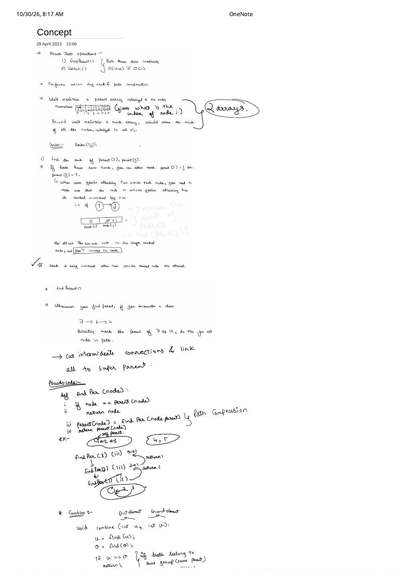
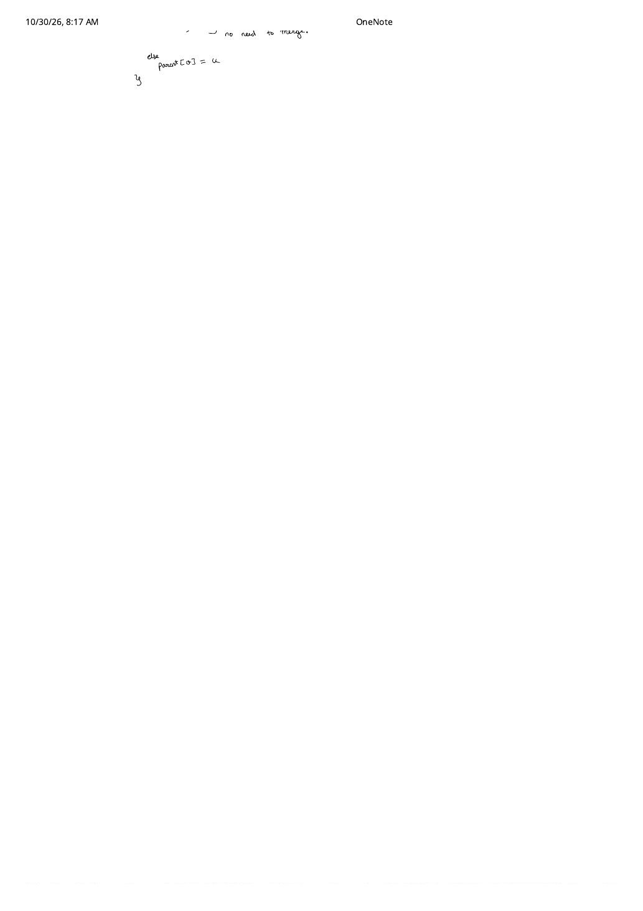

Disjoint Set Union Concept: Path Compression & Union by Rank vs. Size
Expanded from handwritten competitive coding study notes (01_Concept.pdf, Pages 1–2) · View original handwritten pages
1. What Operations Does DSU Support?
Suppose a graph gains edges dynamically and at any moment you must answer: "Do nodes $u$ and $v$ belong to the same connected component?" Running BFS or DFS from scratch per query costs $\mathcal{O}(V + E)$, which times out as soon as $Q$ and $V$ reach $10^5$.
Disjoint Set Union (Union-Find)
A forest-based data structure maintaining a partition of $N$ elements into disjoint sets with two operations:
findParent(u): Returns the canonical representative (ultimate parent / root) of $u$'s set. Two nodes $u$ and $v$ are connected iff $\text{findParent}(u) == \text{findParent}(v)$.union(u, v)/combine(u, v): Merges the set containing $u$ with the set containing $v$ if they are currently distinct.
When both Union by Rank (or Size) and Path Compression are enabled, each operation runs in amortized $\mathcal{O}(\alpha(N))$ time—often written in competitive coding lectures as $\mathcal{O}(4\alpha) \approx \mathcal{O}(1)$.
2. The Two-Array Representation
Every DSU instance begins as $N$ isolated singleton trees using two arrays of length $N$:
parent[0..N-1]: Initialized so every node is its own parent:parent[i] = ifor $i \in \{0, 1, \dots, N-1\}$. A node $r$ is a self-parent (root) iffparent[r] == r.rank[0..N-1]: Initialized to all zeros:rank[i] = 0. Represents an upper bound on tree height before path compression shortcuts intermediate edges.
Initial State ($N = 8$, matching Page 1 of the Notes)
index : [0, 1, 2, 3, 4, 5, 6, 7]parent: [0, 1, 2, 3, 4, 5, 6, 7] (each node points to itself)rank : [0, 0, 0, 0, 0, 0, 0, 0] (all singleton trees start at height 0)
3. Path Compression in findPar(node)
Naively walking node = parent[node] up a tall chain like $7 \to 6 \to 4$ repeats the same work on every subsequent query. Path compression eliminates intermediate hops on the way back up the recursion: once we discover that $4$ is the super-parent, we rewire every visited node on that path to point directly to $4$.
1 ← 2 ← 3, findPar(3) recurses to findPar(2) and base case findPar(1) = 1, then unwinds setting parent[2] = 1 and parent[3] = 1 so future lookups take 1 hop.Step-by-Step Call Stack Unwinding (1 ← 2 ← 3)
1. findPar(3): $3 \ne \text{parent}[3] = 2 \implies$ calls findPar(2)2.
findPar(2): $2 \ne \text{parent}[2] = 1 \implies$ calls findPar(1)3.
findPar(1): $1 == \text{parent}[1] \implies$ hits base case, returns 14.
parent[2] = 1, returns 15.
parent[3] = 1, returns 1
4. Union by Rank vs. Union by Size
Path compression alone can still build $\mathcal{O}(\log N)$-height trees if adversarial unions happen before any findPar calls. To keep trees shallow from the moment they merge, we attach the smaller tree under the root of the larger tree.
Union by Rank: Why Rank Only Grows on Ties
Given union(i, j), first resolve the two ultimate roots $r_i = \text{findPar}(i)$ and $r_j = \text{findPar}(j)$. If $r_i == r_j$, both nodes are already in the same component and we return immediately. Otherwise compare $\text{rank}[r_i]$ and $\text{rank}[r_j]$:
- Strict inequality ($\text{rank}[r_i] \lt \text{rank}[r_j]$): Attach the shorter tree $r_i$ under the taller root $r_j$ (
parent[r_i] = r_j). What happens to the height of $r_j$? Adding a subtree of height $\le h - 1$ beneath a root of height $h$ produces paths of length at most $(h - 1) + 1 = h$. Do NOT incrementrank[r_j]! - Equal rank ($\text{rank}[r_i] == \text{rank}[r_j]$): Either root can become the parent (say
parent[r_i] = r_j). Now a tree of rank $h$ sits 1 edge below another root of rank $h$, pushing worst-case height to $h + 1$—so we incrementrank[r_j] += 1.
Two Classic Bugs to Avoid
- Updating
rank[j]instead ofrank[r_j]: Always compare and update ranks on the roots $r_i = \text{findPar}(i)$ and $r_j = \text{findPar}(j)$, never on the raw arguments $i, j$. - Treating
rankas tree height after path compression: Once path compression flattens branches, actual height shrinks whilerankis never decremented (hence the name rank rather than height). Still, a root of rank $k$ always contains at least $2^k$ nodes, so $\text{rank} \le \lfloor \log_2 N \rfloor$.
Why Union by Size Is Often Even Cleaner
Instead of rank[i] = 0, initialize size[i] = 1. When merging $r_i \ne r_j$ with $\text{size}[r_i] \le \text{size}[r_j]$, set parent[r_i] = r_j and unconditionally add size[r_j] += size[r_i]:
| Property | Union by Rank | Union by Size |
|---|---|---|
| Initial array value | rank[i] = 0 |
size[i] = 1 |
| Update on merge ($r_i \to r_j$) | if (rank[r_i] == rank[r_j]) rank[r_j]++; |
size[r_j] += size[r_i]; (always) |
| Destroyed by path compression? | Exact height loses meaning (remains upper bound) | No! Component node count stays exact after flattening |
| Amortized time with path compression | $\mathcal{O}(\alpha(N))$ per op | $\mathcal{O}(\alpha(N))$ per op |
5. Why $\mathcal{O}(\alpha(N))$ Is Effectively Constant
Tarjan (1975) proved that $M$ intermixed findPar and union operations on $N$ elements run in $\mathcal{O}(M \cdot \alpha(N))$ total time, where $\alpha(N)$ is the inverse Ackermann function:
Intuitively, union by rank/size guarantees that before path compression, every upward pointer jumps to a node of strictly higher rank ($\le \log_2 N$ levels). Each time findPar traverses a multi-edge path, path compression permanently promotes intermediate nodes to point straight to the root, rapidly exhausting their ability to sit deep inside future chains.
6. Complete C++ & Python Implementations
Below is the complete C++ class supporting both unionByRank (from 01_Concept.pdf) and unionBySize, followed by the clean Python equivalent:
#include <bits/stdc++.h>
using namespace std;
class DisjointSet {
vector<int> parent, rnk, sz;
public:
explicit DisjointSet(int n) : parent(n + 1), rnk(n + 1, 0), sz(n + 1, 1) {
iota(parent.begin(), parent.end(), 0);
}
int findPar(int node) {
if (node == parent[node]) return node;
return parent[node] = findPar(parent[node]); // Path compression
}
bool unionByRank(int u, int v) {
int pu = findPar(u), pv = findPar(v);
if (pu == pv) return false; // Same group, no need to merge
if (rnk[pu] < rnk[pv]) {
parent[pu] = pv;
} else if (rnk[pv] < rnk[pu]) {
parent[pv] = pu;
} else {
parent[pu] = pv;
rnk[pv]++; // Rank increases ONLY when equal-rank roots merge
}
return true;
}
bool unionBySize(int u, int v) {
int pu = findPar(u), pv = findPar(v);
if (pu == pv) return false;
if (sz[pu] < sz[pv]) {
parent[pu] = pv;
sz[pv] += sz[pu];
} else {
parent[pv] = pu;
sz[pu] += sz[pv];
}
return true;
}
};class DisjointSet:
def __init__(self, n: int):
self.parent = list(range(n))
self.rank = [0] * n
self.size = [1] * n
def find_par(self, node: int) -> int:
if node != self.parent[node]:
self.parent[node] = self.find_par(self.parent[node])
return self.parent[node]
def union_by_rank(self, u: int, v: int) -> bool:
pu, pv = self.find_par(u), self.find_par(v)
if pu == pv:
return False
if self.rank[pu] < self.rank[pv]:
self.parent[pu] = pv
elif self.rank[pv] < self.rank[pu]:
self.parent[pv] = pu
else:
self.parent[pu] = pv
self.rank[pv] += 1
return TrueFrom the Handwritten Notes
Expand the original handwritten pages below to inspect the exact derivations, dry runs, and annotations:
View original note — 01_Concept.pdf (Page 1: 2-array layout, Union by Rank rules, Path Compression & recursion trace)


01_Concept.pdf Page 1: $\mathcal{O}(4\alpha) \cong \mathcal{O}(1)$ operations, parent and rank initialization, why rank increments only on equal-rank merges, and findPar(3) path compression dry run.View original note — 01_Concept.pdf (Page 2: Combine same-parent guard completion)


01_Concept.pdf Page 2: Skipping merge when u == v (already in the same component) vs. assigning parent[v] = u.